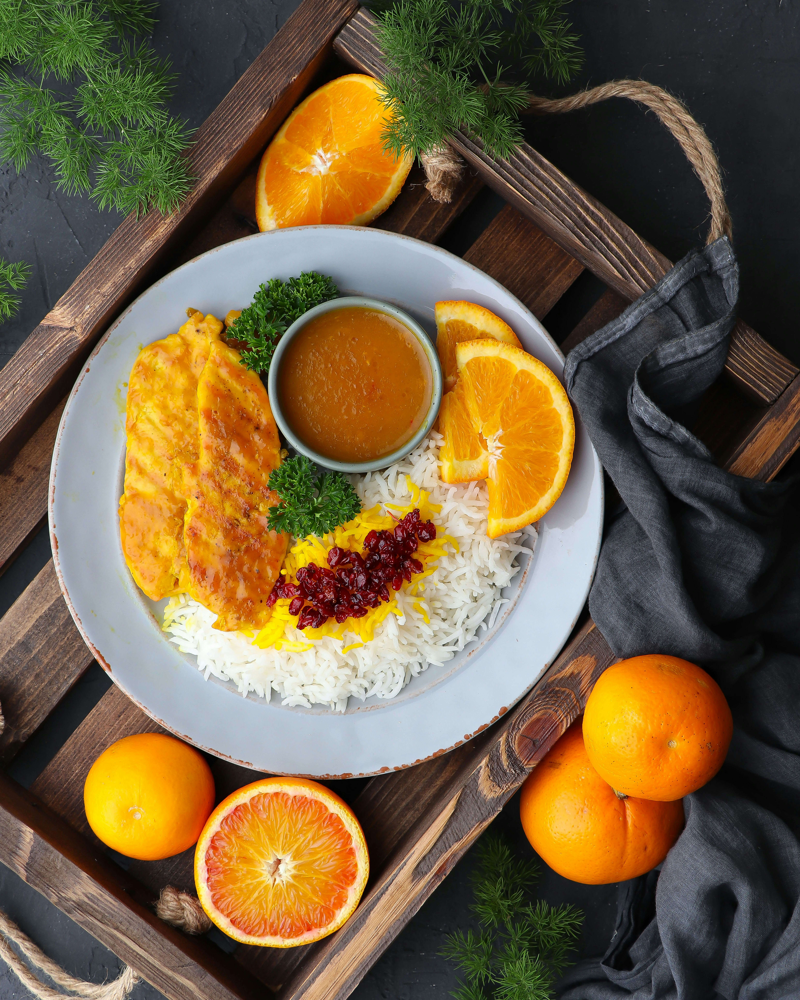
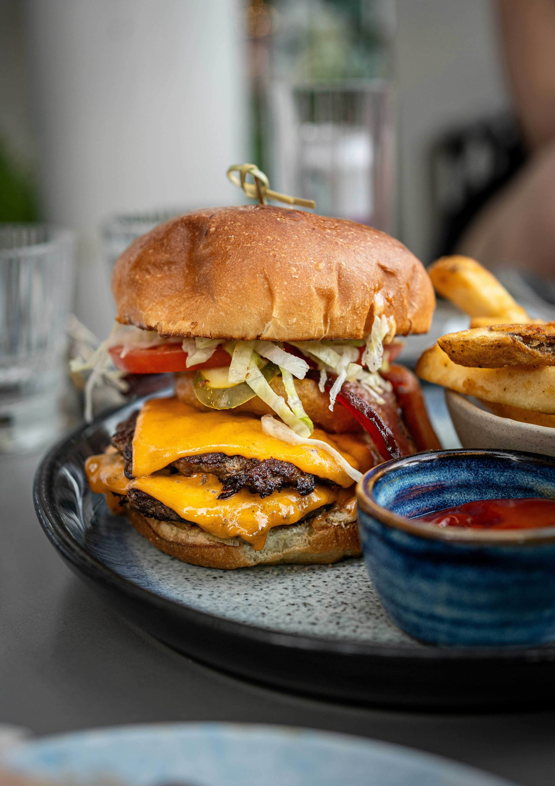
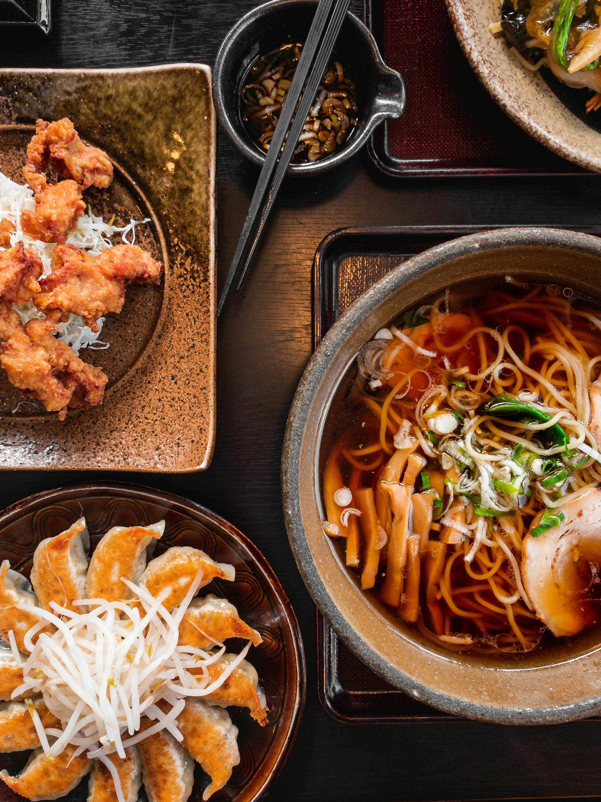
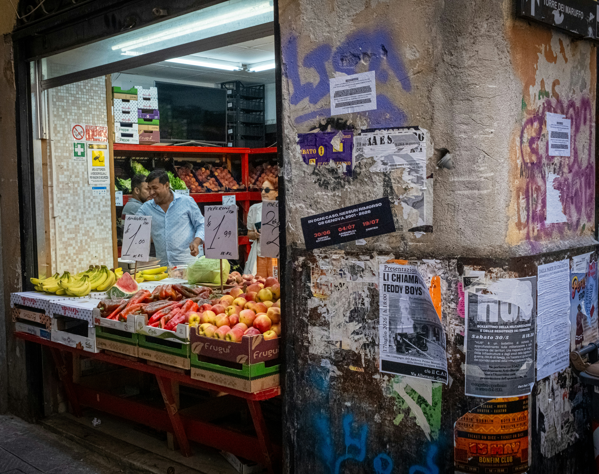
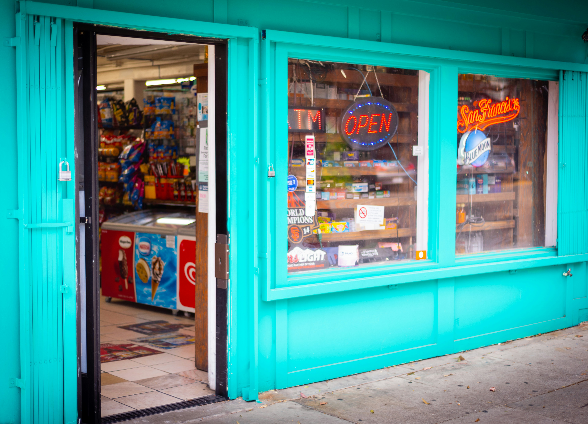
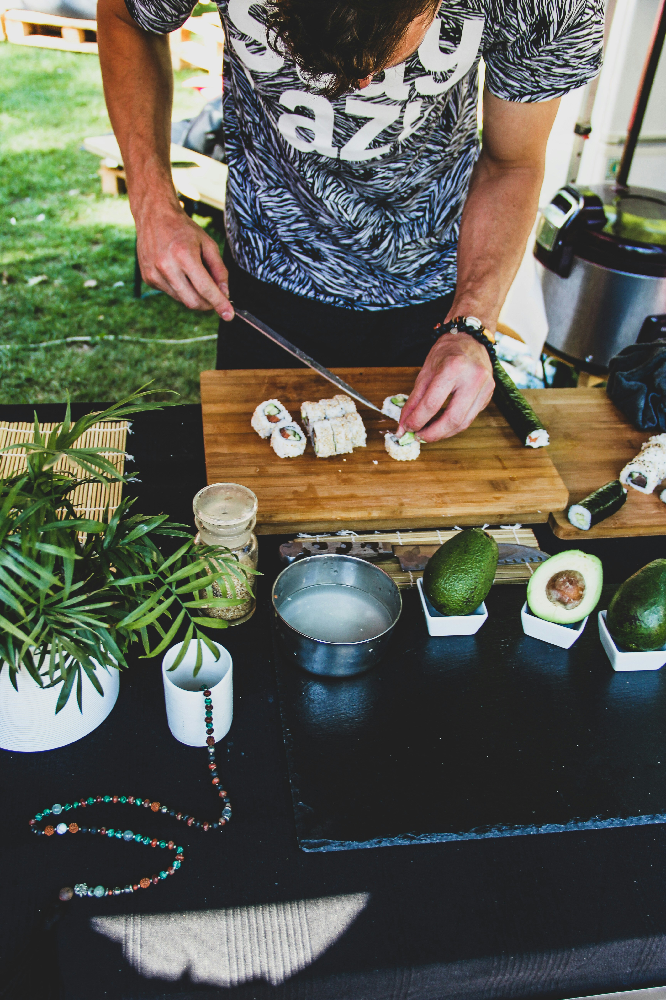

Dine Out
Taniti currently has 10 restaurants: five serve mostly local fish and rice, three serve American-style meals, and two serve Pan-Asian cuisine.
Restaurants:

Local Fish and Rice
Photo by Parnis Azimi on Unsplash

American Style
Photo by Alexandra Tran on Unsplash

Pan-Asian Cuisine
Photo by Paulo Dio on Unsplash
Photo by Mohau Mannathoko on Unsplash
Dine In
Taniti has two supermarkets, two smaller grocery stores, and one convenience store that is open 24 hours a day.
Local Grocers:

Visit SmartWay and Frankmeyer's to find common home goods
Photo by Rosa Nathalia on Unsplash

Local grocers for your every day essentials and local grown produce
Photo by Marco Ardia-Wenink on Unsplash

24/7 Gas, snacks, and smokes
Photo by Masat Thom on Unsplash

Photo by Theo Viktor on Unsplash